Texte Original Official Django REST Framework Tutorial - A Beginners Guide.
Ceci est un tutoriel destiné aux débutants tiré du tutoriel officiel que vous pouvez trouver sur le site du Framework Django REST. Nous créerons la même API de coloration syntaxique que dans le tutoriel original en y ajoutant des explications plus détaillées et des extraits de code plus complets. Nous ferons l'impasse sur les passages relatifs au shell de Django, sur les vues-fonctions (en: function-based views) ainsi que sur d’autres concepts, certes utiles mais qui peuvent porter les débutants à confusion.
Si vous avez eu du mal à terminer le tutoriel officiel, ce tutoriel vous aidera repartir sur de bonnes bases.
Tous les codes sources sont disponibles sur Github.
NOTE: Ce tutoriel est basé sur le livre ‘REST APIs with Django’ qui traite de comment créer et tester plusieurs API web avec Django et Django REST Framework.
Rendez vous sur le lien de Django for Beginners Pour un guide étape par étape sur l’installation de Python 3.6 et de Pipenv sur Mac, Windows et Linux.
Une fois que vous êtes prêts, créez un nouvel environnement virtuel pour votre projet et installez-y django,
djangorestframework et pygment qui sera utile pour la coloration syntaxique. Assurez
vous ensuite d’activer
l’environnement virtuel dans un nouveau terminal.
$ pipenv install django djangorestframework pygments
$ pipenv shell
(env) $NOTE: Par convention nous appelons ici l’environnement virtuel (env). En pratique, le nom de vos
environnements
virtuels sera une variation du nom du dossier courant de votre projet. Pour quitter un environnement virtuel
tapez simplement exit.
Créez maintenant le nouveau projet sur lequel nous allons travailler, nommez le tutorial et ajoutez
lui une
app(lication) snippet qui contiendra notre API.
(env) $ django-admin.py startproject tutorial .
(env) $ python manage.py startapp snippetsAjoutez ensuite les app snippets et rest_framework< à la variable de configuration
INSTALLED_APPS présente dans le
fichier tutorial/settings.py:
INSTALLED_APPS = [
'django.contrib.admin',
'django.contrib.auth',
'django.contrib.contenttypes',
'django.contrib.sessions',
'django.contrib.messages',
'django.contrib.staticfiles',
'rest_framework', # new
'snippets', # new
]Note de traduction: Profitez en pour modifier les variables suivantes afin de régler votre fuseau horaire et la langue par défaut de votre site et de votre page d’administration:
LANGUAGE_CODE = 'fr-FR'
TIME_ZONE = 'Europe/Paris' Créer un modèle est un bon point de départ dans la création d’une nouvelle app. Dans le fichier
snippets/models.py créez comme suit un nouveau modèle que vous nommerez Snippet.
from django.db import models
from pygments.lexers import get_all_lexers
from pygments.styles import get_all_styles
LEXERS = [item for item in get_all_lexers() if item[1]]
LANGUAGE_CHOICES = sorted([(item[1][0], item[0]) for item in LEXERS])
STYLE_CHOICES = sorted((item, item) for item in get_all_styles())
class Snippet(models.Model):
created = models.DateTimeField(auto_now_add=True)
title = models.CharField(max_length=100, blank=True, default='')
code = models.TextField()
linenos = models.BooleanField(default=False)
language = models.CharField(choices=LANGUAGE_CHOICES, default='python', max_length=100)
style = models.CharField(choices=STYLE_CHOICES, default='friendly', max_length=100)
class Meta:
ordering = ('created',)
def __str__(self):
return self.titleInitialisez ensuite vos fichiers de migration et synchronisez la base de données pour la première fois à l’aide des commandes suivantes:
(env) $ python manage.py makemigrations snippets
(env) $ python manage.py migrateAjoutons maintenant quelques données à notre base pour un peu plus de réalisme. Le tutoriel officiel utilise le shell Django pour ceci. Cependant nous utiliserons ici l’interface d’administration de Django dont l’approche visuelle est plus intuitive pour beaucoup de développeurs.
Pour afficher notre modèle dans l’interface administrateur, ajoutez les lignes suivantes au fichier snippets/admin.py:
from django.contrib import admin
from . models import Snippet
admin.site.register(Snippet) Créez ensuite un super-utilisateur à l’aide de la commande suivant afin de vous connecter à votre interface d’administration:
(env) $ python manage.py createsuperuserSuivez les instructions qui apparaissent dans le terminal pour compléter la créations du super-utilisateur.
A présent, lancez pour la première fois votre serveur local en tapant:
(env) $ python manage.py runserverOuvrez votre navigateur et allez à l’adresse http://1207.0.0.1:8000/. Si tout fonctionne correctement vous devriez voir la page suivante :
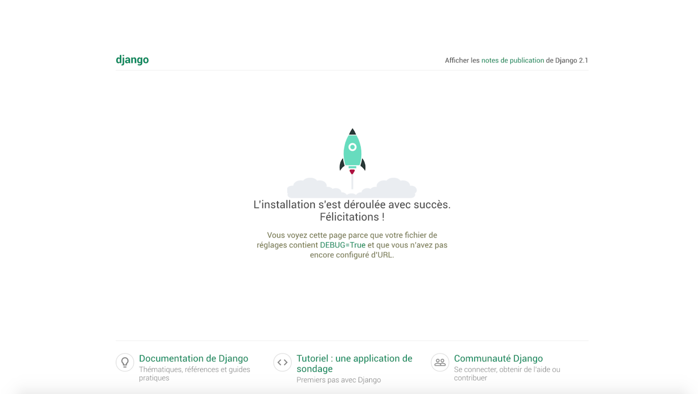Rendez vous maintenant sur la page d’administration de votre site http://1207.0.0.1:8000/admin/. Connectez vous avec les identifiants précédemment créés. Bienvenu sur votre page d’administration:
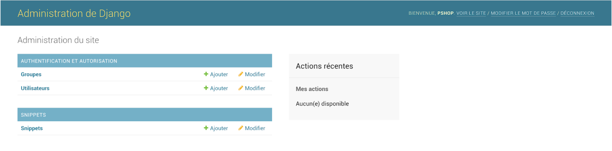Cliquez sur le bouton ‘+ Ajouter’ à côté de Snippets et créez deux nouveaux snippets:
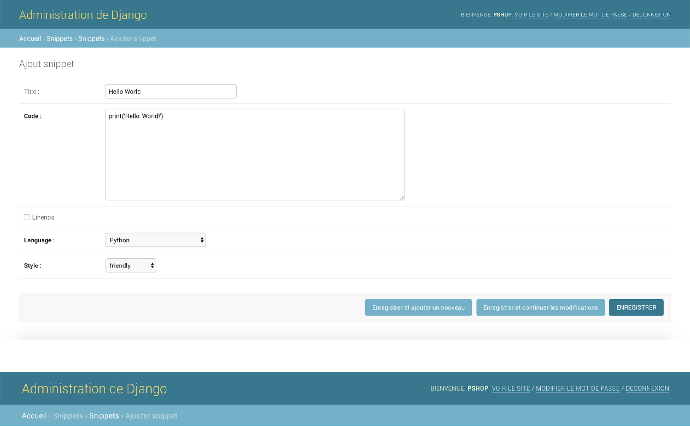 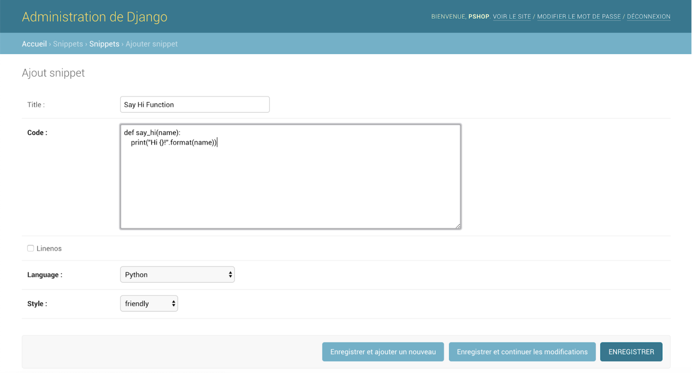Cliquez sur le bouton enregistrer en bas à droite pour valider la création de chacun des snippets. Vous pouvez à présent voir vos nouveau snippets sur la page Snippets à l’adresse http://127.0.0.1:8000/admin/snippets/snippet/.
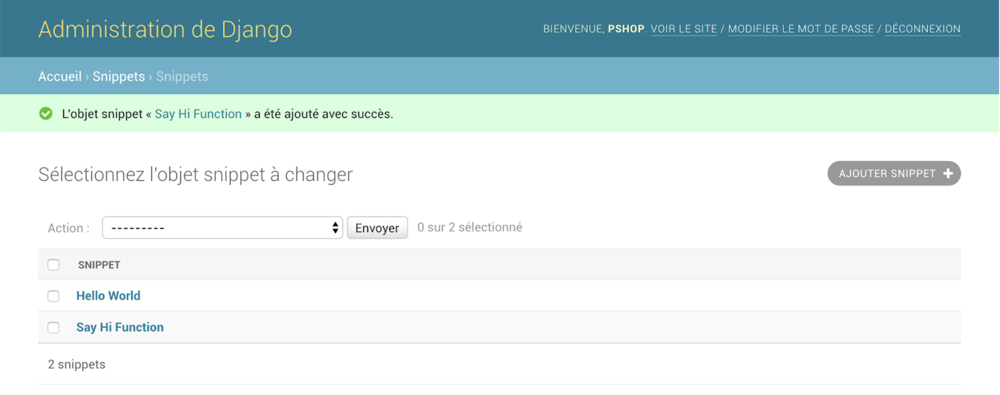Un sérialiseur (en:serializer) transforme les instances de modèles en JSON. C’est là que toute la magie de Django REST Framework opère car une API c’est avant du JSON et des requêtes HTTP.
Créez un fichier snippets/serializers.py:
(env) $ touch snippets/serializers.py Créez une classe SnippetSerializer qui hérite de la classe ModelSerializer de DRF, cette classe utilisera notre modèle Snippet et en extraira les champs.
from rest_framework import serializers
from .models import Snippet, LANGUAGE_CHOICES, STYLE_CHOICES
class SnippetSerializer(serializers.ModelSerializer):
class Meta:
model = Snippet
fields = ('id', 'title', 'code', 'linenos',
'language', 'style', ) Ensuite nous avons besoin d’une classe capable de combiner ensemble les modèles, sérialiseurs et URLs. DRF, tout comme Django, nous fournit un certain nombre de vues génériques pour simplifier les tâche les plus communes.
Ici nous utiliserons ListCreateAPIView
afin d’accéder en lecture seule à toutes les instances de Snippets disponibles ainsi que RetriveUpdateDestroyAPIView
pour accéder à une vue détaillée de chaque instance de snippet supportant les fonctionnalités CRUD (Création,
Lecture, Mise à jour et Suppression). Pour ce faire ajoutez les lignes suivantes dans le fichier
snippets/views.py:
from rest_framework import generics
from .models import Snippet
from .serializers import SnippetSerializer
class SnippetList(generics.ListCreateAPIView):
queryset = Snippet.objects.all()
serializer_class = SnippetSerializer
class SnippetDetail(generics.RetrieveUpdateDestroyAPIView):
queryset = Snippet.objects.all()
serializer_class = SnippetSerializerLa dernière étape consiste à configurer nos URLs. Ajoutez les lignes suivantes dans le fichier tutorial/urls.py
du dossier principal de votre projet:
from django.contrib import admin
from django.urls import include, path # new
urlpatterns = [
path('admin/', admin.site.urls),
path('', include('snippets.urls')), # new
]Pour rappel ceci permettra de gérer les URLs de l’application Snippets dans son propre fichier de configuration snippets/urls.py, créez alors ce fichier avec la commande suivante :
(env) $ touch snippets/urls.pyEt ajoutez y le code suivant:
from django.urls import path
from rest_framework.urlpatterns import format_suffix_patterns
from snippets import views
urlpatterns = [
path('snippets/', views.SnippetList.as_view()),
path('snippets/<int:pk>/', views.SnippetDetail.as_view()),
]
urlpatterns = format_suffix_patterns(urlpatterns)Inclure format_suffix_patterns est optionnel, mais cela permet d’accéder aux URLs en leur spécifiant un format de sortie. Votre API pourra alors supporter aussi bien des URLs telles que http://example.com/api/items/4.json plutôt que simplement http://example.com/api/items/4.
DRF est fourni avec la possibilité de consulter votre API directement dans votre navigateur. Vous pouvez le faire dès à présent. Assurez vous que votre serveur local est bien entrain de tourner :
(env) $ python manage.py runserverRendez vous ensuite sur l’URL listant tous les snippets enregistrés dans votre application à l’adresse suivante: http://127.0.0.1:8000/snippets/:
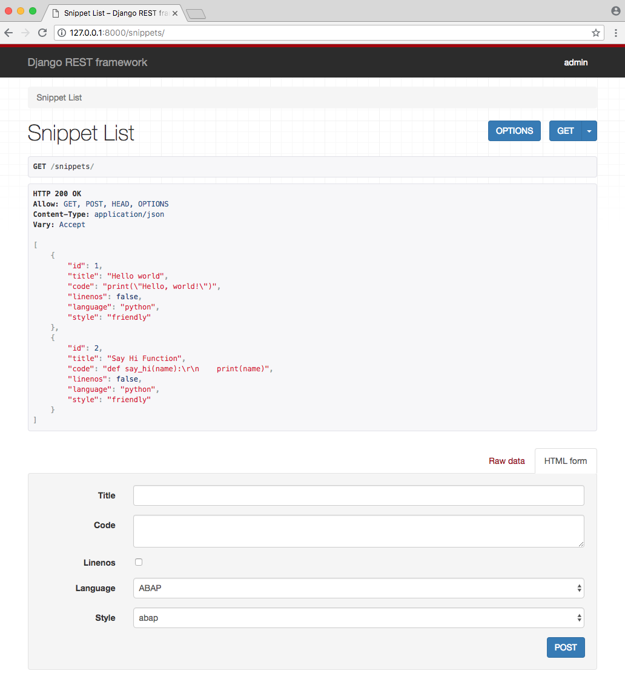Vous pouvez aussi afficher le détail d’un snippet en allant à l’adresse http://127.0.0.1:8000/snippets/{id du snippet}/.
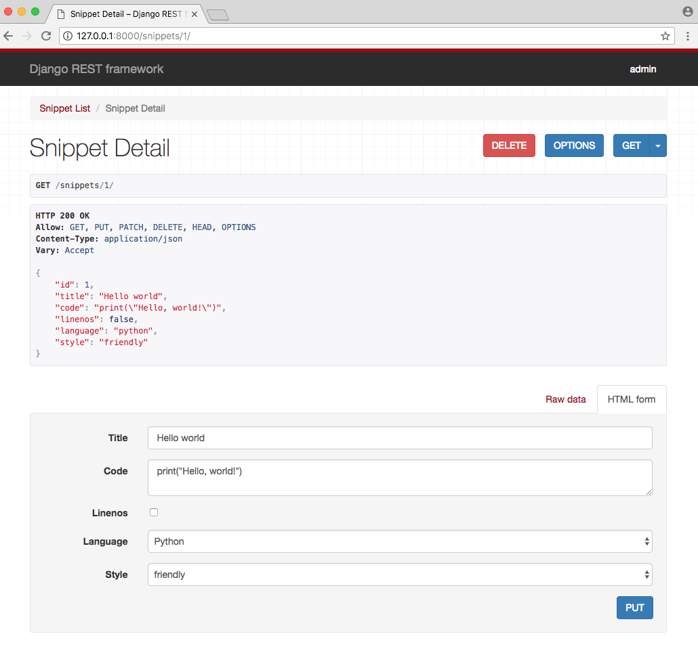Pour rappel, l’id d’un snippet est automatiquement ajouté par Django lors de sa création.
En l’état notre API ne gère pas les droits d’utilisateurs, tout le monde peut ajouter, modifier et supprimer des snippets librement. Dans cette section nous nous assurerons que:
Tout d’abord, ajoutez deux nouveaux champs à votre modèle Snippets existant:
owner qui représente l’utilisateur qui a créé le snippet.highlighted qui stocke au format HTML la coloration syntaxique du code généré par pygments.
Nous voulons aussi nous assurer que lorsque le modèle est sauvegardé, nous utilisons bien la librairie de
coloration syntaxique pygments dans le remplissage du champ highlighted. Nous aurons
donc besoin d’imports
additionnels ainsi que d’une méthode .save() personnalisée. Revenez à votre fichier snippets/models.py
et ajoutez ce qui suit:
from django.db import models
from pygments import highlight # new
from pygments.formatters.html import HtmlFormatter # new
from pygments.lexers import get_all_lexers, get_lexer_by_name # new
from pygments.styles import get_all_styles
LEXERS = [item for item in get_all_lexers() if item[1]]
LANGUAGE_CHOICES = sorted([(item[1][0], item[0]) for item in LEXERS])
STYLE_CHOICES = sorted((item, item) for item in get_all_styles())
class Snippet(models.Model):
created = models.DateTimeField(auto_now_add=True)
title = models.CharField(max_length=100, blank=True, default='')
code = models.TextField()
linenos = models.BooleanField(default=False)
language = models.CharField(choices=LANGUAGE_CHOICES, default='python', max_length=100)
style = models.CharField(choices=STYLE_CHOICES, default='friendly', max_length=100)
owner = models.ForeignKey('auth.User', related_name='snippets', on_delete=models.CASCADE) # new
highlighted = models.TextField() # new
class Meta:
ordering = ('created',)
def save(self, *args, **kwargs): # new
"""
Use the `pygments` library to create a highlighted HTML
representation of the code snippet.
"""
lexer = get_lexer_by_name(self.language)
linenos = 'table' if self.linenos else False
options = {'title': self.title} if self.title else {}
formatter = HtmlFormatter(style=self.style, linenos=linenos,
full=True, **options)
self.highlighted = highlight(self.code, lexer, formatter)
super(Snippet, self).save(*args, **kwargs)
def __str__(self):
return self.titleEn temps normal nous aurions créée nos migrations et les aurions synchronisées (makemigration et
migrate) pour
mettre à jour la base de données. Mais vu que nous avons ajouté un owner (utilisateur) à notre
modèle déjà
existant et que nous n’avons que peu de données déjà en base il est plus simple de supprimer toute la base et de
repartir de zéro.
Arrêtez votre serveur local avec le raccourcis Ctrl+c et entrez les commandes suivantes:
(env) $ rm -f db.sqlite3
(env) $ rm -r snippets/migrations
(env) $ python manage.py makemigrations snippets
(env) $ python manage.py migrateEnsuite créez à nouveau un super-utilisateur comme fait précédemment et ajoutez en un second de la même manière. Vous lancerez alors la commande createsuperuser deux fois. Pour l’exemple appelez vos utilisateurs admin et testuser puis relancez le serveur local :
(env) $ python manage.py createsuperuser
(env) $ python manage.py createsuperuser
(env) $ python manage.py runserverRetournez sur la page d’administration de votre application à l’adresse http://127.0.0.1:8000/admin/
et connectez-vous avec le compte admin.
Cliquez sur le lien Utilisateurs, vous devriez voir les deux comptes utilisateurs que vous venez de créer:
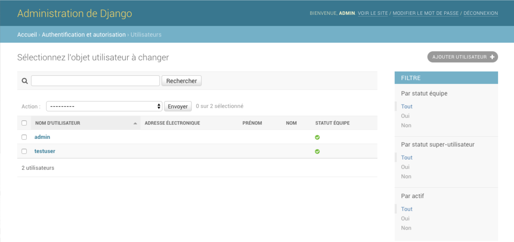Nous avons aussi besoin de recréer les snippets. Sur la page Snippets de l’administration, créez deux nouveaux
snippets en leur attribuant un utilisateur.
Cependant vous remarquerez qu’au moment de cliquer sur sauvegarder une erreur apparaît:
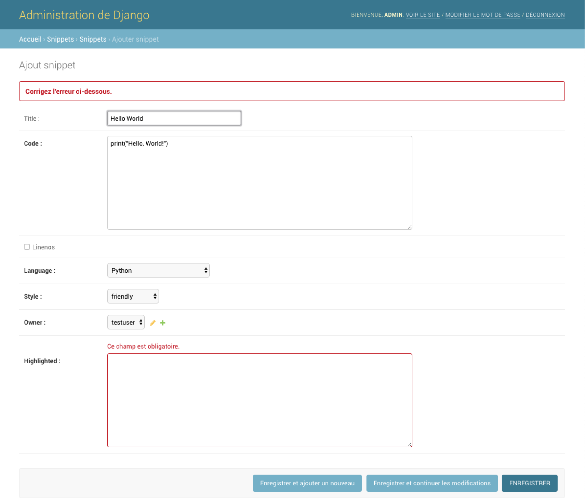Nous avons ici une erreur de validation du nom de ValidationError. Dans le tutoriel officiel de DRF
les données
sont ajoutées en base via le shell de Django, mais ici c’est l’interface d’administration que nous utilisons. Ce
qui empêche la fonction save() que nous avons personnalisé de remplir automatiquement le champ
highlighted. Pour
résoudre ce problème, rendez vous dans le fichier snippets/admin.py et définissez
highlighted en tant que champ
en lecture seule :
from django.contrib import admin
from . models import Snippet
class SnippetAdmin(admin.ModelAdmin):
readonly_fields = ('highlighted',)
admin.site.register(Snippet, SnippetAdmin)Cliquez à nouveau sur le bouton Enregistrer et cette fois tout devrait bien se passer.
La dernière étape est de vous déconnecter de l’administration en cliquant sur Déconnexion en haut à droite de la page:
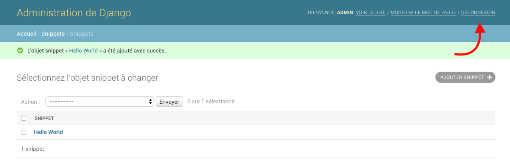Nous ajouterons bientôt des permissions à notre API afin que seuls les utilisateurs authentifiés (connectés) y aient accès.
Note sur les endpoints:
Les endpoints sont les points d’accès à l’API, tels que les URLs de requêtes. Ajouter des endpoints à nos
modèles Utilisateurs c’est gérer les accès en entrée et en sortie à notre API en fonction des droits que nous
leur accordons.
Maintenant que nous avons des utilisateurs sur lesquels travailler, ajoutons leurs des endpoints sur notre API.
Ajoutez une nouvelle classe UserSerializer au fichier snippets/serializers.py:
from django.contrib.auth.models import User
from rest_framework import serializers
from snippets.models import Snippet, LANGUAGE_CHOICES, STYLE_CHOICES
class SnippetSerializer(serializers.ModelSerializer):
class Meta:
model = Snippet
fields = ('id', 'title', 'code', 'linenos',
'language', 'style', )
class UserSerializer(serializers.ModelSerializer):
snippets = serializers.PrimaryKeyRelatedField(
many=True, queryset=Snippet.objects.all())
class Meta:
model = User
fields = ('id', 'username', 'snippets')Parce que snippets a une relation ‘inverse’ avec le modèle par défaut User de Django,
il ne sera pas inclus automatiquement en utilisant la classe ModelSerializer, pour ce faire, nous
devons ajouter ce champ nous même.
Nous avons aussi besoin d’ajouter deux nouvelles vues en lecture seule, une pour afficher la liste des
utilisateurs et la seconde pour afficher les informations détaillées d’un utilisateur. Notez que nous utilisons
ici la vue générique RetriveAPIView pour la vue détaillée en lecture seule et que nous importons au
début du
fichier les classes User et UserSerializer. Ouvrez le fichier
snippets/views.py et ajoutez ce qui suit:
from django.contrib.auth.models import User # new
from rest_framework import generics
from .models import Snippet
from .serializers import SnippetSerializer, UserSerializer # new
class SnippetList(generics.ListCreateAPIView):
queryset = Snippet.objects.all()
serializer_class = SnippetSerializer
class SnippetDetail(generics.RetrieveUpdateDestroyAPIView):
queryset = Snippet.objects.all()
serializer_class = SnippetSerializer
class UserList(generics.ListAPIView): # new
queryset = User.objects.all()
serializer_class = UserSerializer
class UserDetail(generics.RetrieveAPIView): # new
queryset = User.objects.all()
serializer_class = UserSerializerPour finir d’ajouter nos nouvelles vues, il faut configurer leurs URLs.
Ajoutez les lignes suivantes au fichier snippets/urls.py:
from django.urls import path
from rest_framework.urlpatterns import format_suffix_patterns
from snippets import views
urlpatterns = [
path('snippets/', views.SnippetList.as_view()),
path('snippets/<int:pk>/', views.SnippetDetail.as_view()),
path('users/', views.UserList.as_view()), # new
path('users/<int:pk>/', views.UserDetail.as_view()), # new
]
urlpatterns = format_suffix_patterns(urlpatterns)Pour l’instant il n’est pas possible d’associer automatiquement l’utilisateur connecté qui crée le snippet cette
instance de snippet. Nous pouvons automatiser cette tâche en surchargeant la méthode
.perform_create() dans nos
vues snippet, ce qui permet de modifier la manière dont sont sauvegardées les instances.
Ajoutez la méthode suivante à notre classe SnippetList dans le fichier snippets/views.py:
class SnippetList(generics.ListCreateAPIView):
queryset = Snippet.objects.all()
serializer_class = SnippetSerializer
def perform_create(self, serializer): # new
serializer.save(owner=self.request.user)Maintenant que nos snippets sont associés à l’utilisateur qui les a créés, mettons à jour
SnippetSerializer en y
ajoutant un owner. Assurez vous d’inclure aussi owner dans la liste des champs fields.
Ouvrez
snippets/serializers.py:
from django.contrib.auth.models import User
from rest_framework import serializers
from snippets.models import Snippet, LANGUAGE_CHOICES, STYLE_CHOICES
class SnippetSerializer(serializers.ModelSerializer):
owner = serializers.ReadOnlyField(source='owner.username') # new
class Meta:
model = Snippet
fields = ('id', 'title', 'code', 'linenos',
'language', 'style', 'owner',) # new
class UserSerializer(serializers.ModelSerializer):
snippets = serializers.PrimaryKeyRelatedField(many=True, queryset=Snippet.objects.all())
class Meta:
model = User
fields = ('id', 'username', 'snippets')Ici, l’argument source sert à contrôler quel attribut est utilisé pour remplir le champ
owner et peut pointer
vers n’importe quel attribut de l’instance sérialisée. Notez aussi que nous utilisons un champ ReadOnlyField,
qui le limite à la lecture seule, empêchant toute modification de celui-ci lorsqu’il est sérialisé. Nous aurions
aussi bien pu utiliser un champ CharField(read_only=True) pour obtenir le
même résultat.
A présent nous voulons nous assurer que seuls les utilisateurs authentifiés peuvent créer, mettre à jour et supprimer des snippets.
DRF est livré avec un certain nombre de classes de gestions de permissions que nous pouvons utiliser pour
restreindre l’accès à une vue donnée. Nous utiliserons ici IsAuthenticatedOrReadOnly pour s’assurer
que seules
les requêtes authentifiées auront des autorisations en lecture et écriture et que toutes les autres seront en
lecture seule. Une fois n’est pas coutume, ouvrez le fichier snippets/views.py et ajoutez les lignes
suivantes:
from django.contrib.auth.models import User
from rest_framework import generics, permissions # new
from .models import Snippet
from .serializers import SnippetSerializer, UserSerializer
class SnippetList(generics.ListCreateAPIView):
queryset = Snippet.objects.all()
serializer_class = SnippetSerializer
permission_classes = (permissions.IsAuthenticatedOrReadOnly,) # new
def perform_create(self, serializer):
serializer.save(owner=self.request.user)
class SnippetDetail(generics.RetrieveUpdateDestroyAPIView):
queryset = Snippet.objects.all()
serializer_class = SnippetSerializer
permission_classes = (permissions.IsAuthenticatedOrReadOnly,) # new
...A présent rendez vous sur http://127.0.0.1:8000/snippets/
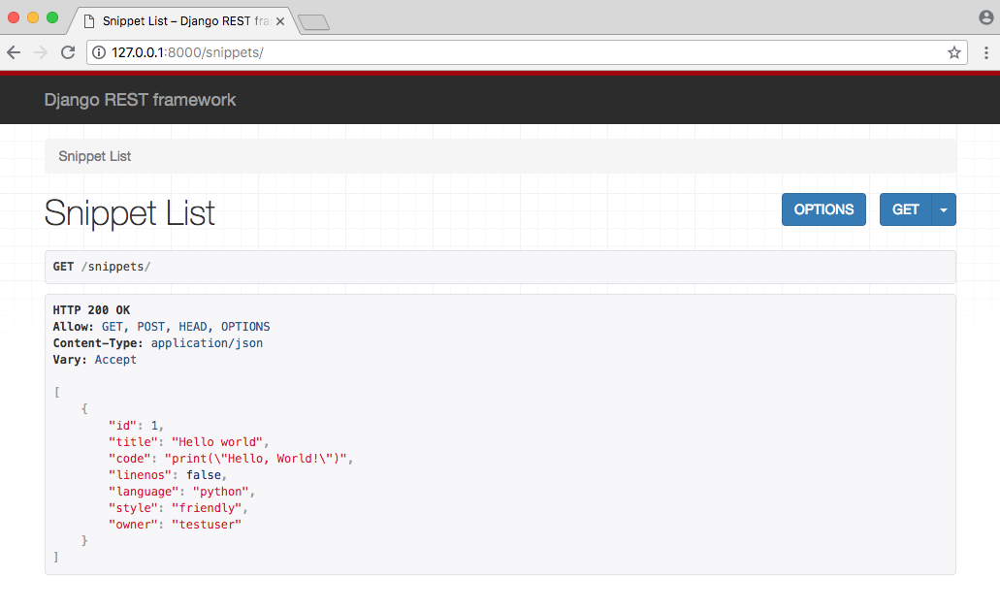Puisque qu’aucun utilisateur n’est connecté, vous pouvez remarquer qu’il n’est plus possible de créer de nouveau snippet. Pour ce faire, vous devez être connecté en tant qu'utilisateur.
Nous pouvons ajouter une page de connection en éditant le configurateur d’URL du dossier de votre projet tutorial/urls.py.
Ajoutez rest_framework.urls à la route api-auth/:
from django.contrib import admin
from django.urls import include, path
urlpatterns = [
path('admin/', admin.site.urls),
path('api-auth/', include('rest_framework.urls')), # new
path('', include('snippets.urls')),
]Notez que la route api-auth/ écrite ici n’a pas d’importance, vous auriez aussi bien pu écrire
un-nom/, le résultat aurait été le même, l’important étant que rest_framework.urls
soit inclus.
Ouvrez maintenant votre navigateur et rafraîchissez la page. Vous verrez un lien Log in en haut à
droite de la page.
Connectez vous avec votre utilisateur testuser et rendez vous sur le endpoint http://127.0.0.1:8000/users/ vous pouvez constater que chaque
utilisateur a à présent une liste des id de snippets qu’il a créé.
Il n’y a ici qu’un seul snippet dont l’id est 1, créé par testuser. Tous les snippets qu’il créera dans le futur apparaitront ici. Cela fonctionnera de la même manière pour tous les prochains utilisateurs et snippets créés.